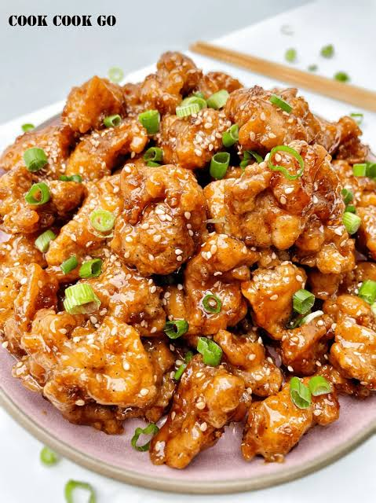

Home
Korean Honey Garlic Chicken Recipe

Description
A classic combination of honey, soy sauce and garlic working together to produce a sticky, sweet sauce to coat golden tender chicken pieces.
Ingredients
Main Ingredients:
- Chicken - skinless chicken breasts or thighs, cut into pieces or left whole.
- Coating - 2 tablespoons cornstarch or all-purpose flour to help the sauce cling and give a light crust.
- Seasoning - ½ teaspoon salt and ½ teaspoon black pepper.
- Cooking Fat - 1 to 2 tablespoons olive oil, vegetable oil, or canola oil for searing.
- Butter - 1 to 2 tablespoons unsalted butter.
Honey Garlic Sauce Ingredients:
- Garlic - 4 to 6 cloves (minced or finely chopped)
- Honey - ⅓ to ½ cup (the core sweetener)
- Soy Sauce - 2 to 3 tablespoons regular or low-sodium soy sauce (for umami saltiness)
- Vinegar - 1 tablespoon rice vinegar or apple cider vinegar (cuts the sweetness)
- Extras (Optional) - A splash of chicken stock/water, a dash of sriracha or red pepper flakes for heat, and sliced green onions or sesame seeds for garnish.
Steps to Follow:
- First we dredge the chicken in cornflour (cornstarch), salt and pepper. Then we fry in oil over a hot pan until golden brown.
- Add a little butter to the pan (this will enrich the sauce later) along with some minced garlic.
- Add honey, stock, rice vinegar and light soy sauce to a bowl and stir together. Add to the pan with the chicken and bring to the boil. Let it simmer and reduce until thick and sticky.
- If you so please, top the chicken with chopped parsley and chilli flakes.